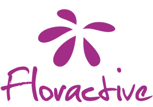

Criação
Nascemos nas corridas de rua e expandimos para eventos corporativos, transformando produtos em lembranças únicas.
Medalhas, brindes e objetos de eventos transformados em lembranças que atravessam a linha de chegada.
Clientes



Nascemos nas corridas de rua e expandimos para eventos corporativos, transformando produtos em lembranças únicas.
Em cada gravação, existe a oportunidade de tornar um momento mais pessoal, mais marcante e impossível de repetir.
Medalhas gravadas na hora, na tenda do evento, com o nome e o tempo de cada corredor.
Da primeira ideia ao último detalhe, criamos experiências com intenção.
Nascemos nas corridas de rua e expandimos para eventos corporativos, transformando produtos em lembranças únicas.
Valorizamos a inovação, a qualidade e a experiência de cada pessoa.
Unimos tecnologia a laser, planejamento e personalização ao vivo para criar experiências exclusivas.
Conectamos pessoas e marcas por meio de experiências personalizadas que geram valor e deixam lembranças.